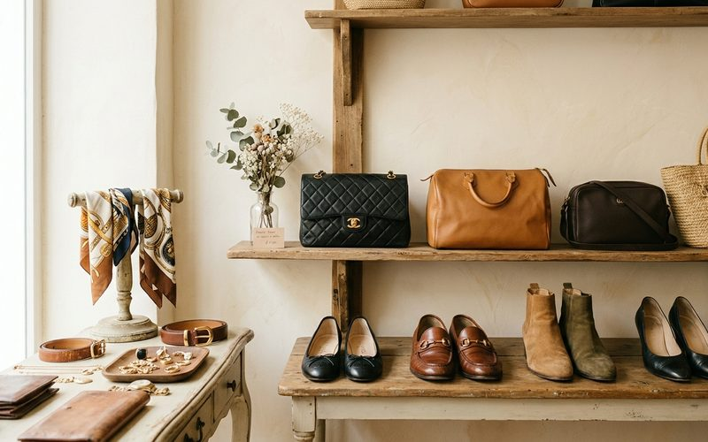

Por que investir em moda circular e roupas usadas hoje?
Reflexões, Brechó Outra VezA moda circular deixou de ser apenas uma tendência passageira para se tornar um pilar essencial do consumo moderno. Comprar roupas usadas em um brechó de curadoria não é apenas uma escolha econômica; é responsabilidade ambiental. Em Belo Horizonte, especialmente na região da Savassi, essa cultura vem ganhando contornos de luxo e exclusividade através de espaços como o Brechó Outra Vez.
O conceito de moda sustentável baseia-se na ideia de prolongar o ciclo de vida das roupas. O fast-fashion produziu uma cultura de descarte que sobrecarrega nossos recursos naturais. Quando você opta por comprar roupas femininas usadas, você está ativamente retirando uma peça do ciclo de descarte e dando a ela uma nova história. Cada peça carrega uma memória, um corte único que, muitas vezes, não pode mais ser encontrado nas coleções massificadas de hoje.
No nosso brechó de curadoria, o processo de seleção é rigoroso. Não vendemos apenas "roupa usada". Vendemos o conceito de encontrar tesouros. Muitas vezes, um casaco vintage possui um forro de seda ou uma costura reforçada que as grandes lojas de departamento atuais já não oferecem pelos mesmos preços. O garimpo é uma jornada incrível onde o estilo pessoal fala mais alto do que a tendência efêmera.

Além da estética e da qualidade, existe o fator financeiro. Ao investir em peças de marca – sejam elas Farm, Animale, Zara ou grifes internacionais –, você paga uma fração do preço original. E a beleza do brechó é que a economia é mútua. Você pode economizar comprando peças de alta qualidade, e também pode fazer dinheiro consignando aquelas roupas que não fazem mais sentido no seu guarda-roupa atual. É um ciclo onde o valor da peça é respeitado do início ao fim.
Visitar um brechó feminino na Savassi é uma experiência deliciosa. Se você ainda tem dúvidas sobre comprar roupas usadas, venha nos visitar. Toque nos tecidos, sinta o caimento e descubra como a moda de segunda mão é, na verdade, a frente da moda atual. Sustentabilidade é a maior tendência que podemos vestir, e ela vem carregada de estilo e consciência.
Tem peças incríveis para desapegar ou quer renovar o closet?
Agendar visita: (31) 8403-2616